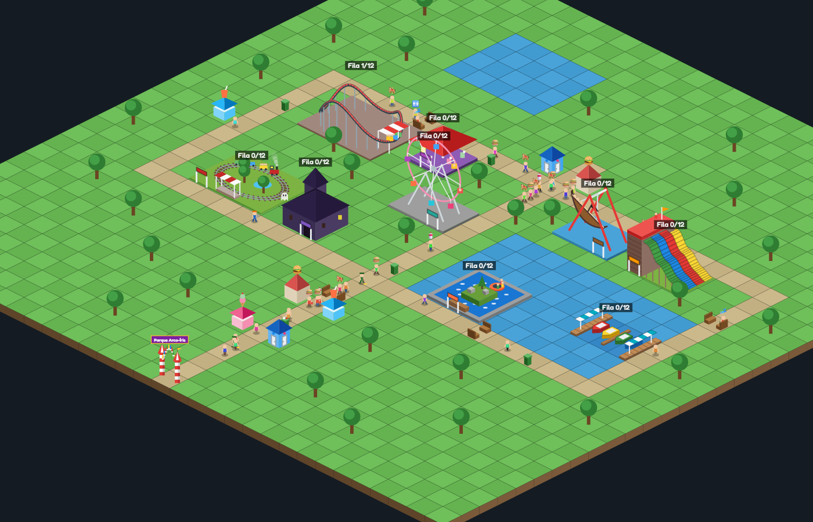
Bem-vindo, diretor! Este manual explica tudo o que você precisa para transformar um terreno vazio no parque mais animado da região. Leia na ordem ou pule direto para o que interessa.
Você é o diretor de um parque de diversões. Construa caminhos, atrações e barracas, cuide da limpeza e das contas, e faça os visitantes saírem felizes (e de bolso vazio!).
Convidados chegam pelo portão com algum dinheiro no bolso e passeiam pelos caminhos. Eles sentem fome, sede, vontade de ir ao banheiro, cansaço e, claro, vontade de se divertir. Cada vez que usam algo do seu parque, pagam por isso, e é desse dinheiro que você vive. Quanto melhor o parque, maior a avaliação (de 0 a 999) e mais rápido chegam novos visitantes.
No modo livre não há fim: o desafio é crescer. Nos cenários você tem um objetivo e um prazo (por exemplo, receber 700 visitantes até dezembro). Vencer um cenário libera o próximo.
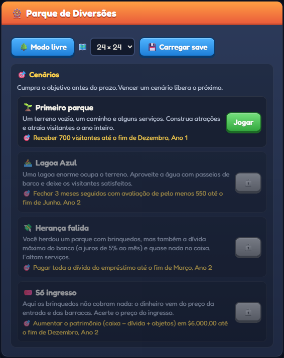
Ao abrir o jogo você vê a tela inicial, com um parque parado ao fundo:
O botão 🏠 da barra superior volta para esta tela a qualquer momento, e o parque fica parado enquanto ela está aberta.
| Comando | O que faz |
|---|---|
| Botão esquerdo | Usa a ferramenta escolhida: pinta terreno, constrói, contrata, demole ou inspeciona. Arraste para pintar vários tiles de uma vez. |
| Botão do meio (roda) pressionado | Arrasta o mapa. |
| Roda do mouse | Zoom, centrado no cursor. |
| Z | Gira 90° a atração que você está posicionando. |
| Espaço | Pausa / continua (volta à última velocidade). |
| 1 2 3 | Velocidade 1×, 2× e 4×. |
| Esc | Fecha a janela aberta; sem janela, fecha os painéis laterais. |
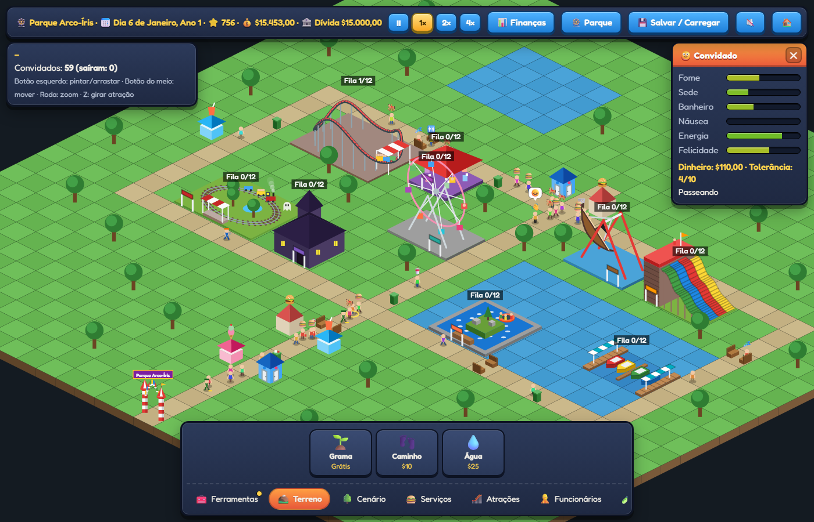
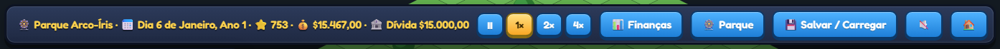
Da esquerda para a direita: o nome do parque, o dia, mês e ano, a ⭐ avaliação, o 💰 caixa (fica vermelho se negativo) e a 🏦 dívida. Depois vêm os botões de velocidade (⏸ 1× 2× 4×), as janelas 📊 Finanças, 🎡 Parque e 💾 Salvar / Carregar, o botão de música e o 🏠 (tela inicial). Avisos como “Saldo insuficiente” aparecem num balão logo abaixo.
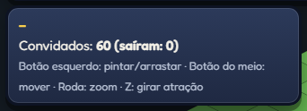
No canto superior esquerdo: o tile sob o mouse (coordenadas, terreno, objeto, quanto lixo há numa lixeira e quantos itens de sujeira há no chão), o número de convidados no parque e quantos já saíram. Nos cenários, aparece também a linha do 🎯 objetivo com o progresso e o prazo.
Embaixo da tela ficam as abas e, acima delas, os cartões da aba aberta, com ícone, nome e preço. Passe o mouse sobre um cartão para ver custo, manutenção, tamanho e, nos brinquedos, a intensidade e os lugares. Cartões que o caixa não cobre ficam apagados, com o preço em vermelho. A aba que contém a ferramenta em uso ganha um pontinho laranja.
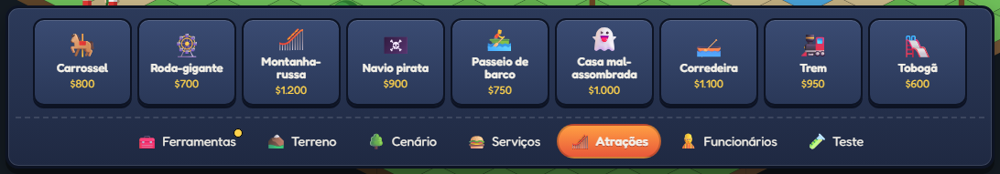
| Aba | Conteúdo |
|---|---|
| 🧰 Ferramentas | 🔍 Inspecionar (detalhes de convidados, objetos e funcionários; preços) e 🔨 Demolir (devolve 50% do custo). |
| ⛰️ Terreno | Grama (grátis), Caminho ($10 por tile) e Água ($25 por tile). |
| 🌳 Cenário | Árvore, Banco e Lixeira. |
| 🍔 Serviços | Barraca de comida, Barraca de bebidas, Sorveteria e Banheiro. |
| 🎢 Atrações | Os nove brinquedos (capítulo 4). |
| 👷 Funcionários | Faxineiro e Mecânico: escolha um e clique num caminho para contratar. |
| 🧪 Teste | Só no modo livre: +5 convidados e Limpar (remove todos os convidados). |
Nos cenários, só aparecem os objetos liberados naquele cenário.
Com 🔍 Inspecionar, clique num convidado, numa barraca ou brinquedo, ou num funcionário: um painel abre à direita. O do convidado mostra as necessidades em barras (verde = bem, vermelho = mal), o dinheiro, a tolerância e o que ele está fazendo; o do objeto, os preços (editáveis) e as estatísticas (nos brinquedos, também o estado de conservação); o do faxineiro ou do mecânico, o trabalho do mês e o botão Demitir. Feche com ✕ ou Esc.
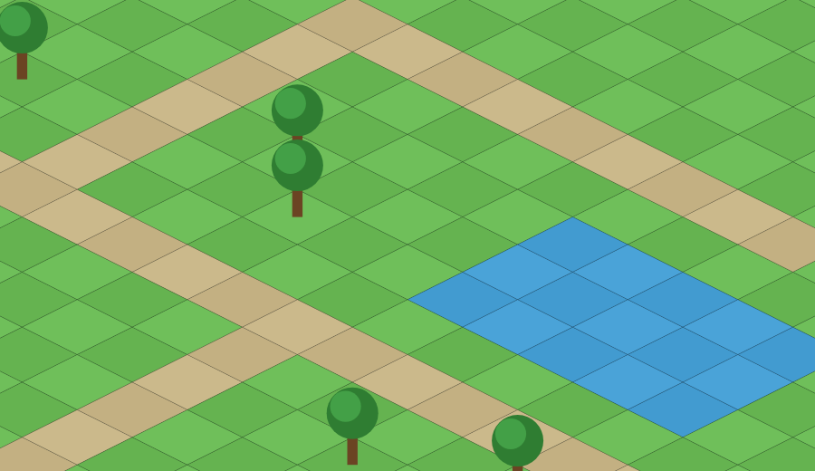
O terreno é uma grade de tiles em losango. Escolha um tipo na aba ⛰️ Terreno e clique (ou arraste) para pintar.
O tile do portão não pode ser alterado.
Escolha um objeto na barra e passe o mouse pelo mapa. A prévia mostra a pegada inteira (todos os tiles que ele ocupa) e um “fantasma” do objeto: colorida com contorno amarelo se dá para construir ali, vermelha se não dá. Clique para construir; o custo sai do caixa na hora.
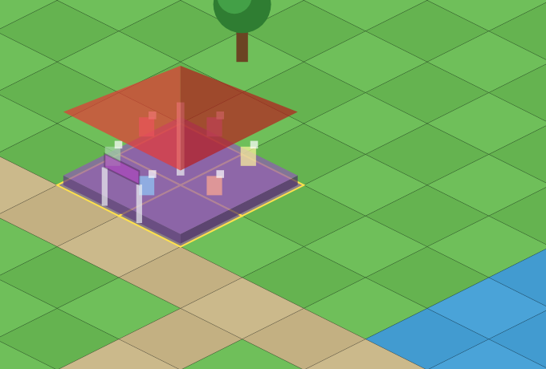
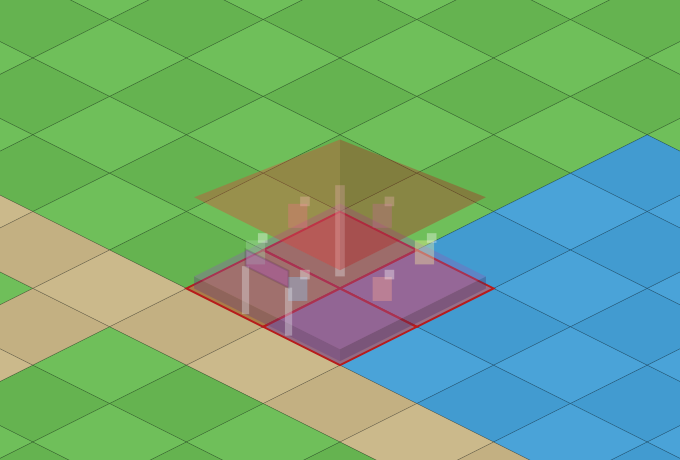
A ferramenta 🔨 Demolir remove o objeto inteiro (clique em qualquer tile dele) e devolve 50% do custo. Quem estava usando o objeto ou na fila volta a passear.
Antes de clicar, aperte Z para girar a atração 90° (quatro posições). Atrações retangulares trocam largura e profundidade; todas mudam o lado do portal de entrada (os dois postes com a faixa colorida). Só as atrações giram.
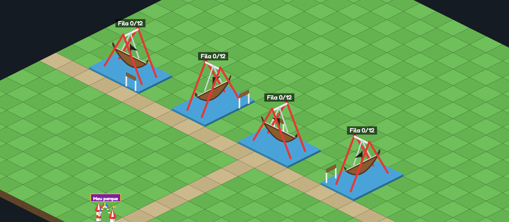
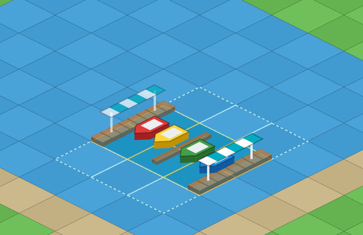
Nove brinquedos, do passeio tranquilo ao frio na barriga. Cada ficha mostra os números do jogo e o público: a intensidade (1 a 10) é comparada com a tolerância de cada convidado (capítulo 6). “Público” é a fatia aproximada dos convidados que aceitam o brinquedo normalmente.
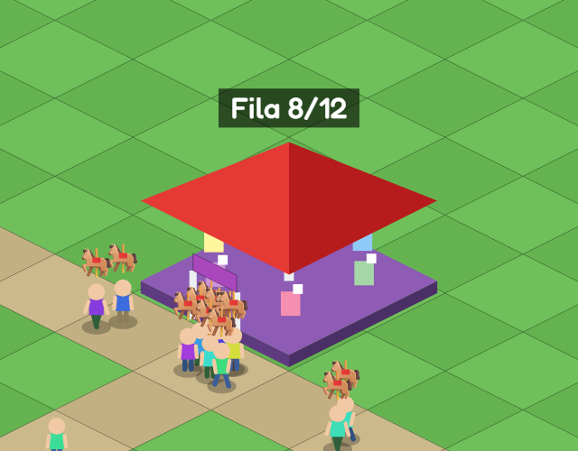
| Custo / manutenção | $800 / $100 por mês |
| Preço inicial | $5 |
| Intensidade | 5 |
| Lugares · duração | 6 · 8 s |
| Efeitos | felicidade +35 · náusea +25 · energia −10 |
Público ≈ 79% O clássico: barato, rápido e agrada a quase todos. Viagens curtas fazem a fila andar depressa. Deixa um pouco enjoado: um banco por perto ajuda.
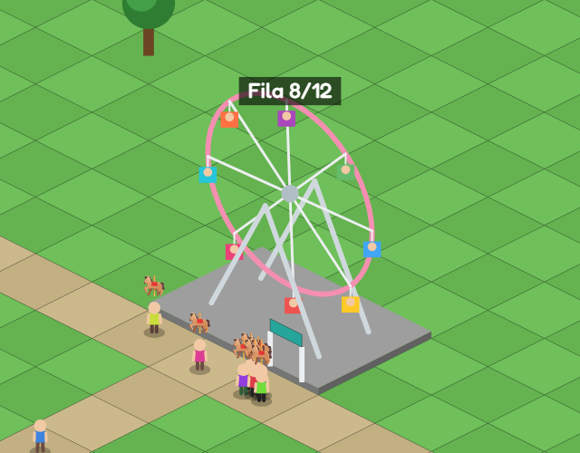
| Custo / manutenção | $700 / $100 por mês |
| Preço inicial | $6 |
| Intensidade | 2 |
| Lugares · duração | 8 · 20 s |
| Efeitos | felicidade +30 · náusea +5 · energia −5 |
Público ≈ 30% Para quem gosta de calma. Quase não enjoa. Sozinha atende pouca gente, mas completa a variedade e acolhe os convidados mais sensíveis.
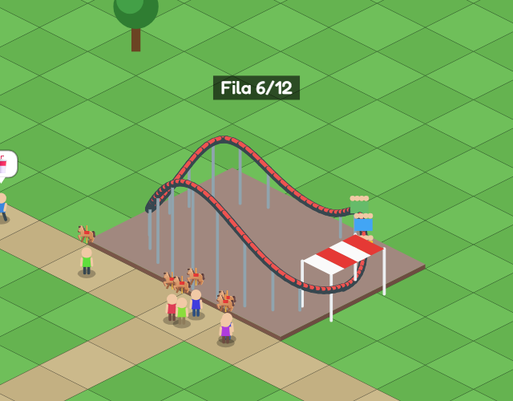
| Custo / manutenção | $1.200 / $200 por mês |
| Preço inicial | $8 |
| Intensidade | 8 |
| Lugares · duração | 12 · 25 s (2 voltas) |
| Efeitos | felicidade +45 · náusea +30 · energia −15 |
Público ≈ 50% A estrela do parque: a maior alegria e o ingresso mais caro. Também a mais cara de manter, e a que mais enjoa: espere vômito no caminho da saída.
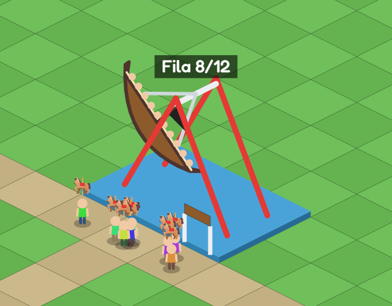
| Custo / manutenção | $900 / $120 por mês |
| Preço inicial | $7 |
| Intensidade | 7 |
| Lugares · duração | 10 · 18 s |
| Efeitos | felicidade +40 · náusea +20 · energia −12 |
Público ≈ 69% Um balanço gigante. Quase tão emocionante quanto a montanha-russa, mais barato e com muitos lugares. Excelente custo-benefício.
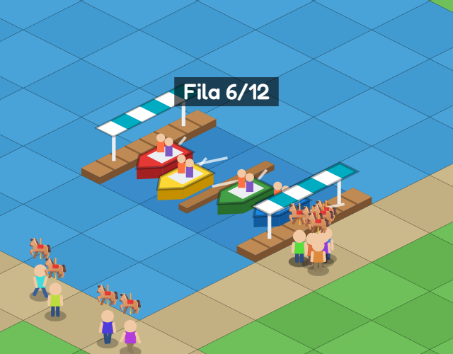
| Custo / manutenção | $750 / $90 por mês |
| Preço inicial | $4 |
| Intensidade | 3 |
| Lugares · duração | 8 (4 barcos de 2) · 16 s |
| Efeitos | felicidade +28 · náusea +8 · energia −6 |
Público ≈ 50% Construído na água, com uma fileira de água livre à frente e atrás (os canais). Os convidados embarcam pelas laterais: encoste um caminho num dos lados.
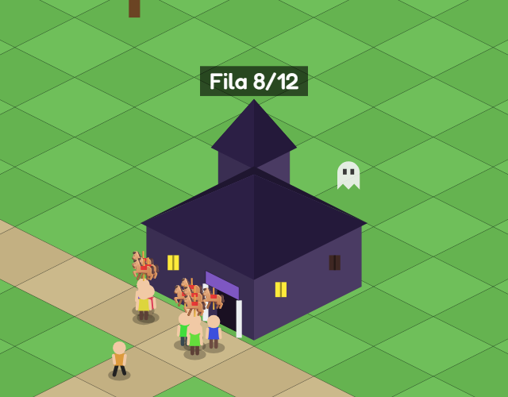
| Custo / manutenção | $1.000 / $110 por mês |
| Preço inicial | $6 |
| Intensidade | 4 |
| Lugares · duração | 8 · 15 s |
| Efeitos | felicidade +34 · náusea +3 · energia −6 |
Público ≈ 69% Susto sem enjoo: muita alegria e quase nenhuma náusea. Ocupa só 2×2 e agrada a muita gente.
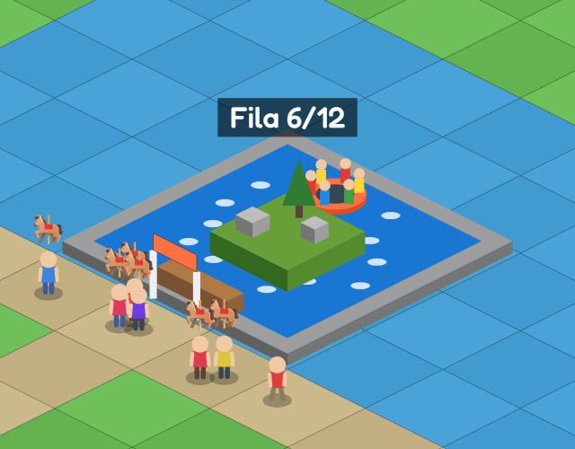
| Custo / manutenção | $1.100 / $130 por mês |
| Preço inicial | $7 |
| Intensidade | 6 |
| Lugares · duração | 6 (1 bote) · 20 s (1 volta) |
| Efeitos | felicidade +38 · náusea +16 · energia −10 |
Público ≈ 79% Rafting em volta de uma ilha. Fica na água (3×3), mas não precisa de canais: o bote dá a volta dentro da própria atração. Poucos lugares: a fila cresce rápido.
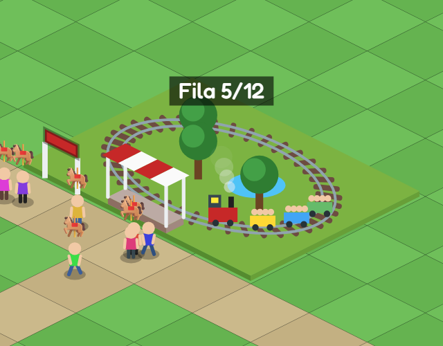
| Custo / manutenção | $950 / $70 por mês |
| Preço inicial | $4 |
| Intensidade | 3 |
| Lugares · duração | 12 · 30 s (2 voltas) |
| Efeitos | felicidade +30 · náusea +4 · energia +5 |
Público ≈ 50% Locomotiva e três vagões em volta de um jardim. O único brinquedo que descansa (devolve energia). Muitos lugares e manutenção baixa.
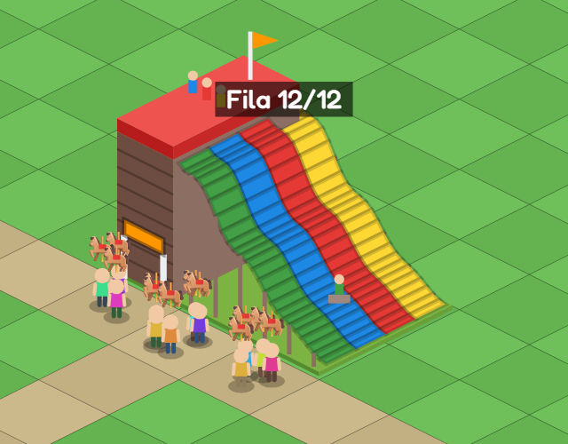
| Custo / manutenção | $600 / $60 por mês |
| Preço inicial | $3 |
| Intensidade | 5 |
| Lugares · duração | 6 · 14 s |
| Efeitos | felicidade +32 · náusea +10 · energia −12 |
Público ≈ 79% Rampa gigante de quatro pistas, descida sentado num saco. A atração mais barata de construir e manter. Subir a escada cansa.
Comida, bebida, banheiro e descanso mantêm os convidados no parque (e gastando). Ter cada um desses quatro serviços também vale pontos na avaliação.
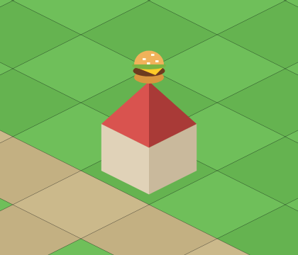
| Custo / manutenção | $350 / $80 por mês |
| Preço inicial | $4 (comida) |
| Uso | 3 s · fome −60 · banheiro +12 · deixa um papel |
Mata bem a fome. Quem come fica com o papel na mão até achar uma lixeira.
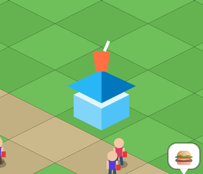
| Custo / manutenção | $350 / $40 por mês |
| Preço inicial | $3 (bebida) |
| Uso | 2 s · sede −80 · banheiro +10 · náusea −10 · deixa um copo |
A sede sobe mais rápido que a fome: espalhe bebidas. Ainda alivia um pouco o enjoo.
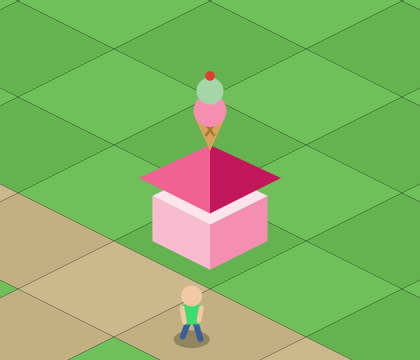
| Custo / manutenção | $400 / $60 por mês |
| Preço inicial | $3 (sorvete) |
| Uso | 2 s · fome −30 · sede −25 · felicidade +8 · banheiro +6 · deixa um palito |
Um lanche leve que também refresca e alegra. Conta como comida: quem tem fome vai à mais perto entre ela e a barraca.
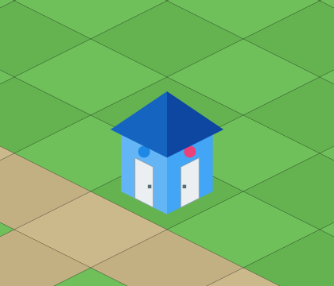
| Custo / manutenção | $350 / $50 por mês |
| Preço inicial | grátis (pode cobrar) |
| Uso | 4 s · banheiro −100 |
Indispensável: comer e beber enchem a bexiga. Sem banheiro, a queixa “Preciso de um banheiro!” se espalha.
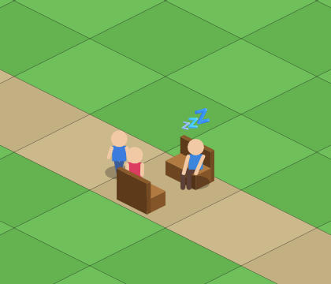
| Custo / manutenção | $60 / $5 por mês |
| Preço inicial | grátis |
| Uso | 6 s sentado · energia +40 · náusea −35 |
Barato e poderoso: recupera o cansaço e cura o enjoo. Coloque perto da saída dos brinquedos intensos. Há dois lugares em cada lado com banco: num caminho reto, quatro pessoas sentam ao mesmo tempo.
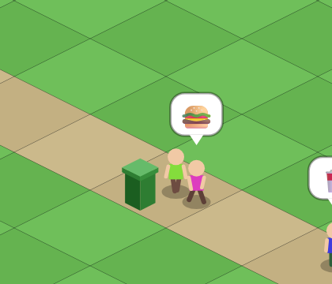
| Custo / manutenção | $50 / $3 por mês |
| Capacidade | 30 itens (depois transborda) |
Fica na borda do caminho, sozinha no tile. Precisa de um faxineiro para ser esvaziada (capítulo 10).
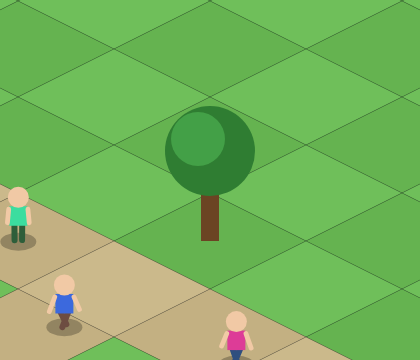
| Custo / manutenção | $30 / $2 por mês |
Pura decoração: deixa o parque bonito, mas não muda a avaliação. Lembre que toda árvore também cobra manutenção.
Cada convidado é único: tem seu dinheiro, seu passo, sua paciência e seu gosto por emoção. Entender o que eles sentem é o segredo de um parque cheio.
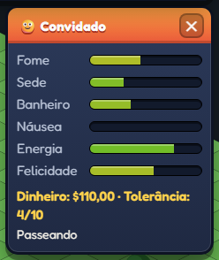
| Barra | Com o tempo | Resolve com |
|---|---|---|
| Fome | sobe depressa | barraca de comida, sorveteria |
| Sede | sobe mais depressa ainda | barraca de bebidas (sorvete ajuda) |
| Banheiro | sobe devagar, e mais a cada lanche | banheiro |
| Náusea | desce sozinha | banco, bebida; brinquedos aumentam |
| Energia | cai enquanto ele anda | banco, trem |
| Felicidade | cai com o tempo (não cai dentro do brinquedo) | brinquedos, sorvete |
Quando uma necessidade fica urgente, o convidado sai procurando o serviço pelos caminhos. Ele escolhe o mais próximo que alcança e que pode pagar. A felicidade cai mais rápido esperando em fila e andando, e cai ainda mais com qualquer necessidade crítica (fome, sede, banheiro ou náusea muito altas, ou energia muito baixa).
Um ícone acima do convidado mostra o que ele está indo buscar ou usando: 🍔 comida, 🥤 bebida, 🍦 sorvete, 🚻 banheiro, 💤 descanso, 🎠 diversão, 🗑️ indo jogar o lixo fora, 👋 indo embora. Um papelzinho, copo ou palito na mão é o lixo que ele ainda não jogou fora.
Os convidados andam balançando braços e pernas, e o corpo deles conta como estão, sem precisar abrir o painel:
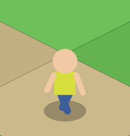
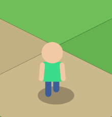
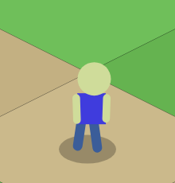
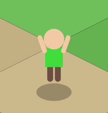
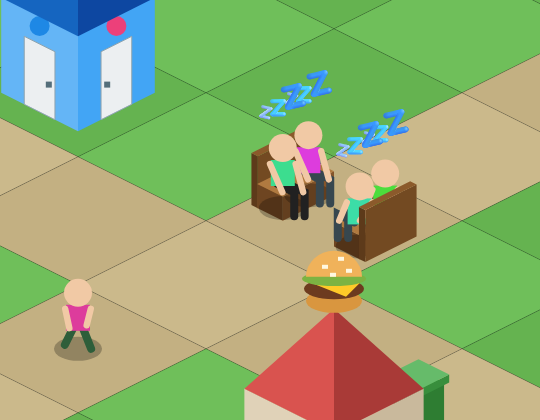
Sentado no banco, de mãos no colo, ele está recuperando a energia e o estômago (💤 sobre a cabeça). Os funcionários usam o mesmo boneco, com uniforme: o faxineiro de verde, com boné e vassoura, e o mecânico de macacão azul, boné laranja e chave inglesa.
Com o mapa bem afastado (zoom baixo), os bonecos ficam simples, sem braços e pernas. O jogo pausado congela todo mundo no meio do movimento.
Todo convidado tem uma tolerância de 1 a 10 (veja no painel). A maioria fica no meio: tolerância 5 ou 6 é o mais comum, e 1 ou 10 são raríssimos. Ele aceita brinquedos com intensidade até 2 pontos acima ou abaixo da tolerância. Fora disso só vai se estiver muito infeliz (desesperado por diversão) e então paga caro: menos felicidade por ponto de diferença e, se o brinquedo for forte demais, mais náusea, e sai pensando 🤢 “Esse brinquedo foi intenso demais!”.
Cada convidado chega com $30 a $150. Ele paga ao usar serviços e no embarque dos brinquedos. Quando o dinheiro fica abaixo de $2, vai embora satisfeito. Se ficar muito infeliz, vai embora reclamando (e isso derruba a avaliação). Quem vai embora caminha até o portão.
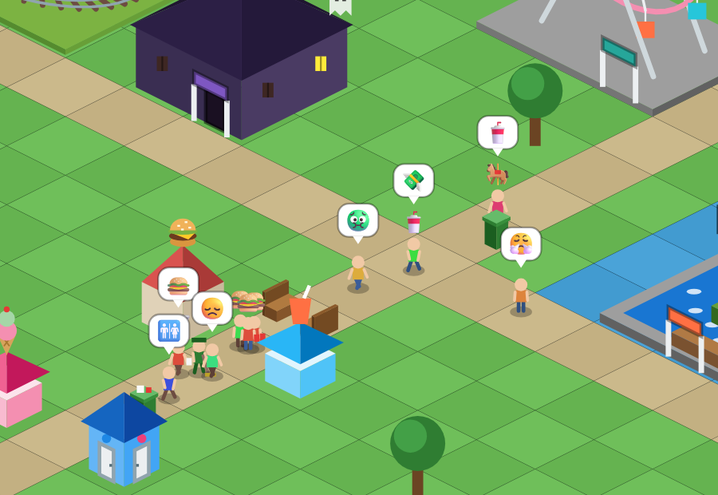
| Pensamento | O que quer dizer / o que fazer | |
|---|---|---|
| 😤 | Que fila demorada! | Desistiu da fila por falta de paciência (25 a 45 s). Construa outra atração ou uma de viagens mais curtas. |
| 🍔 | Estou com fome e não acho comida | Não há comida que ele alcance pelos caminhos. Construa barracas, espalhadas. |
| 🥤 | Estou com sede e não acho bebida | Idem, para bebidas. |
| 🚻 | Preciso de um banheiro! | Faltam banheiros (ou estão longe demais da rede de caminhos dele). |
| 💸 | Está tudo caro demais! | O serviço existe, mas ele não pode pagar. Baixe o preço. |
| 🤢 | Esse brinquedo foi intenso demais! | Foi num brinquedo forte demais para ele. Ofereça opções mais calmas. |
| 🎟️ | Ingresso caro demais! | Desistiu no portão (não chega a entrar; só aparece nas queixas). Baixe a entrada. |
| 😞 | Este parque é chato, vou embora | Felicidade no fundo do poço. Mais diversão, menos fila e menos caminhada. |
| 🗑️ | Que sujeira! | Pisou em lixo. Lixeiras e faxineiros. |
| 😖 | Que nojo, pisei em vômito! | Pisou em vômito. Faxineiros (eles limpam vômito primeiro). |
| 🤮 | Passei mal... | Vomitou. Bancos e bebidas perto dos brinquedos intensos. |
| 😣 | Que aperto! Lotado demais aqui | Caminho lotado. Alargue o caminho ou crie rotas alternativas. |
| 🛠️ | O brinquedo quebrou! | Estava na fila (ou indo para ela) quando o brinquedo quebrou. Contrate um mecânico (capítulo 11). |
| 😰 | Fiquei preso no brinquedo! | Estava a bordo na hora da quebra e ficou preso. Quanto antes o conserto, menos ele sofre. |
As queixas do mês ficam na janela 🎡 Parque, das mais comuns para as menos comuns: é o melhor termômetro do que está faltando.
Quando quer se divertir, o convidado não vai simplesmente ao brinquedo mais perto: ele compara todos os que consegue alcançar pelos caminhos e escolhe o que promete mais felicidade líquida:
Se nenhum brinquedo compensa (fila longa demais, caro demais, longe demais), ele não vai a nenhum.
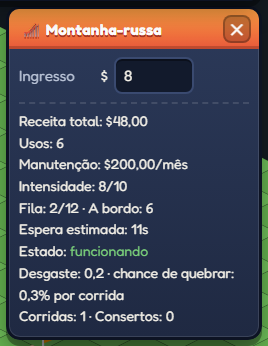
Com 🔍 Inspecionar, clique numa barraca, banheiro, banco ou atração e digite o novo preço. A mudança vale na hora. O painel mostra a receita total e o número de usos, ótimos para comparar.
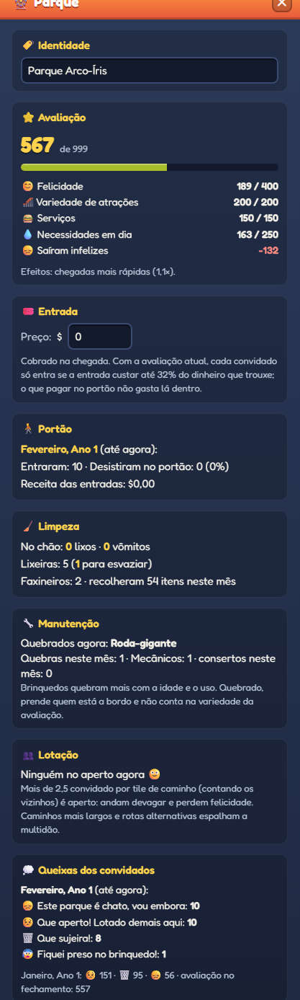
A avaliação (⭐ na barra superior) vai de 0 a 999. Ela é recalculada a cada 5 segundos e o número mostrado anda suavemente até o novo valor. A janela 🎡 Parque mostra exatamente de onde vêm os pontos:
| Parte | Máximo | Como ganhar |
|---|---|---|
| 😊 Felicidade | 400 | felicidade média dos convidados × 4 |
| 🎢 Variedade de atrações | 200 | 40 por tipo diferente de atração funcionando (quebrada não conta) |
| 🍔 Serviços | 150 | ter comida, bebida, banheiro e descanso (37,5 cada) |
| 💧 Necessidades em dia | 250 | fome, sede, banheiro e náusea baixas |
| 😞 Saíram infelizes | −150 | fração dos que saíram reclamando |
| 🎟️ Desistiram no portão | −100 | fração dos que acharam a entrada cara |
| 🗑️ Sujeira no chão | −150 | lixo por tile de caminho (vômito conta 2) |
As penalidades olham para o passado recente e vão sendo esquecidas aos poucos (caem pela metade em cerca de 0,7 mês). Um mês ruim pesa, mas não para sempre.
Não há limite de convidados ao mesmo tempo: o parque enche conforme a gente chega e fica.
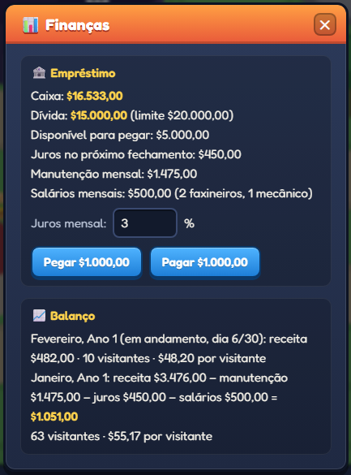
O jogo começa em Janeiro do Ano 1. Cada mês tem 30 dias e dura 5 minutos em velocidade 1× (um dia = 10 s; um ano ≈ 1 hora).
No modo livre você começa com $15.000 no caixa e $15.000 de dívida: o dinheiro de abertura veio do banco. Na janela Finanças:
No último dia de cada mês o parque paga as contas, de uma vez:
O balanço do mês (receita − manutenção − juros − salários, número de visitantes, receita por visitante e quantos brinquedos quebraram) fica na janela Finanças. Brinquedo quebrado continua cobrando manutenção. O caixa pode ficar negativo no fechamento: não há falência, mas sem dinheiro você não constrói, não contrata e não paga parcelas.
Construir cobra o preço na hora; sem saldo, nada é construído (“Saldo insuficiente”). Demolir devolve 50% do custo. Pintar caminho custa $10 por tile e água $25. Antes de construir, pense: a atração vai render mais do que custa de manutenção por mês? Brinquedos vazios afundam o caixa.
Na janela 🎡 Parque você define o preço da entrada (começa em $0). Ele é cobrado na chegada. Cada convidado só entra se a entrada custar até uma fração do dinheiro que trouxe (de 15% a 45%, conforme a avaliação). Quem acha caro dá meia-volta: é uma chegada perdida e uma penalidade na avaliação. E lembre: o que ele paga no portão não gasta lá dentro.
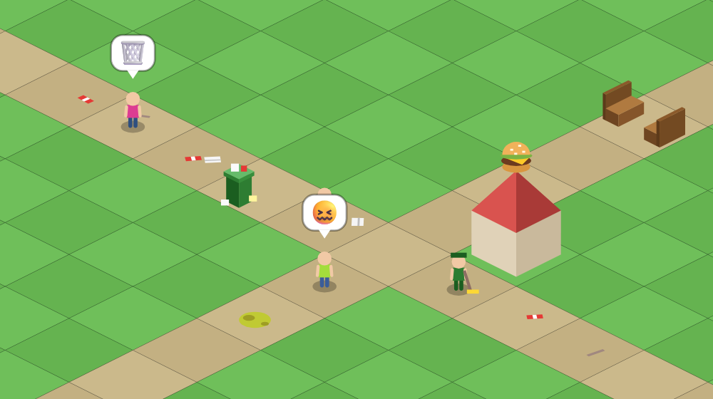
Pisar num tile sujo deixa o convidado mais triste (vômito, o dobro). A sujeira no chão também tira até 150 pontos da avaliação.
Na aba 👷 Funcionários, escolha o Faxineiro e clique num caminho para contratar: $500 na hora e $150 por mês de salário. De uniforme verde e vassoura na mão, ele anda sozinho pelos caminhos e escolhe o trabalho mais importante por perto: primeiro vômito, depois lixeiras quase cheias (75% ou mais) e então o lixo do chão. Dois faxineiros nunca correm para o mesmo lugar. Sem nada para limpar, ele patrulha.
Para ver o trabalho dele ou demitir, use 🔍 Inspecionar e clique nele (a contratação não é devolvida).
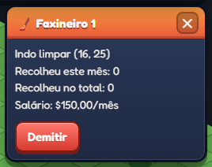
Brinquedo novo quase nunca quebra. Brinquedo velho e muito usado quebra, e sempre na pior hora: com gente a bordo.
Cada atração tem um desgaste, que só cresce:
A cada viagem que parte, o jogo sorteia se ela vai quebrar. A chance começa em 0,3% por viagem num brinquedo novo e sobe 0,15% por ponto de desgaste, até no máximo 6%. Um brinquedo com um ano de idade e 200 viagens (desgaste 22) já tem 3,6% por viagem. Só as atrações quebram: barracas, banheiro, banco e lixeira não.
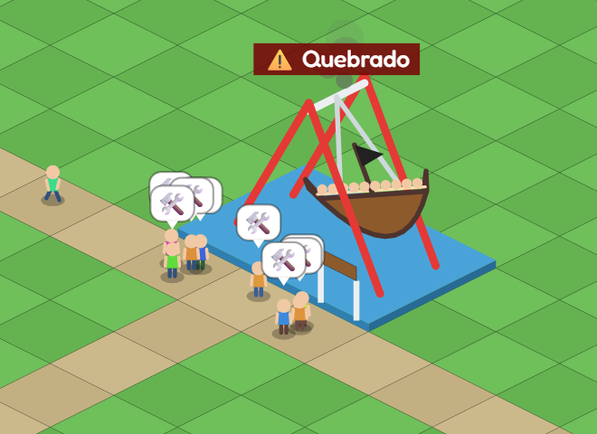
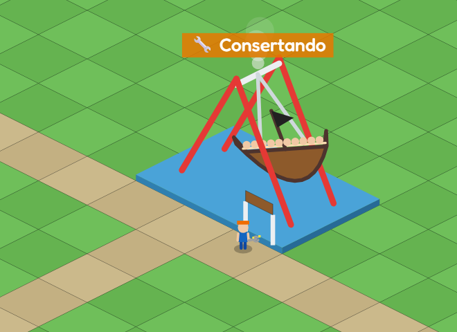
Na aba 👷 Funcionários, escolha o 🔧 Mecânico e clique num caminho: $600 na hora e $200 por mês de salário. Ele anda um pouco mais rápido que o faxineiro e, quando um brinquedo quebra, vai pelos caminhos até o mais perto que nenhum outro mecânico está atendendo. Sem nada quebrado, patrulha.
Encostado no brinquedo, trabalha 10 segundos. O conserto tira 30% do desgaste e dá uma garantia de 15 viagens sem quebrar. Um brinquedo velho consertado continua mais frágil que um novo.
Para demitir, use 🔍 Inspecionar e clique nele (a contratação não é devolvida).
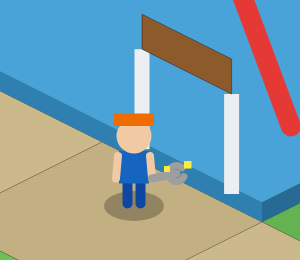
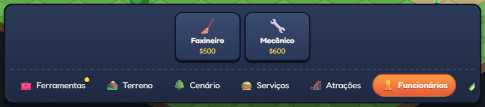
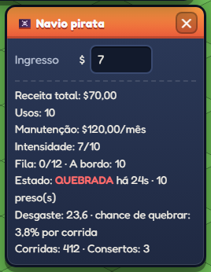
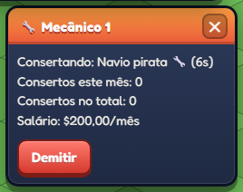
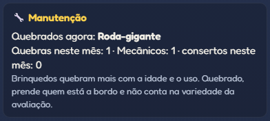
Parque cheio é bom, até o caminho virar um engarrafamento.
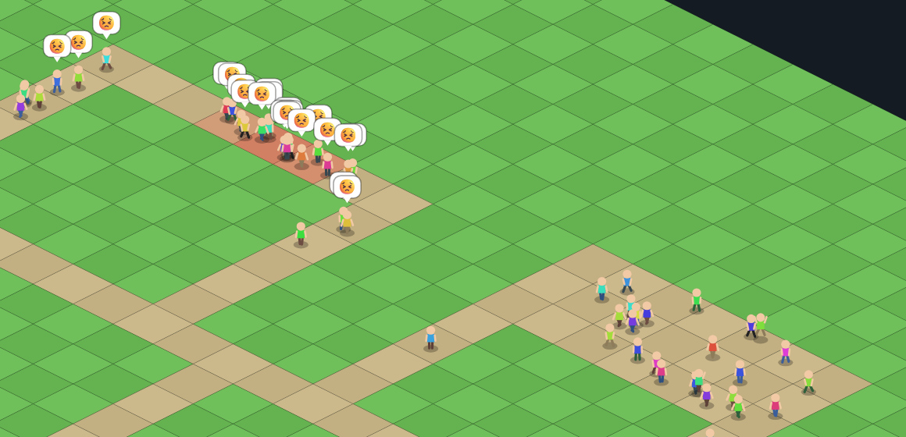
Os botões ⏸ 1× 2× 4× da barra superior controlam o tempo. Teclas: Espaço pausa e continua (volta à velocidade anterior), 1 2 3 escolhem 1×, 2× e 4×.
Pausado, aparece o aviso ao lado, e você pode construir, demolir, inspecionar e mudar preços. Em 4× um mês passa em pouco mais de um minuto: ótimo para esperar o dinheiro entrar, perigoso para deixar problemas crescerem.
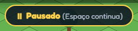
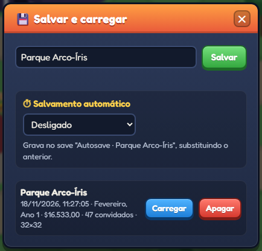
Clique em 💾 Salvar / Carregar. Digite um nome (o do parque já vem sugerido) e clique em Salvar; se já existir um save com esse nome, o jogo pergunta antes de substituir.
A lista mostra cada save com o cenário (se houver), a data em que foi salvo, o mês do jogo, o caixa, os convidados e o tamanho do mapa. Carregar substitui o parque atual; Apagar remove o save para sempre. O save guarda tudo: terreno, objetos, preços, filas, finanças, convidados, sujeira, faxineiros, mecânicos, o desgaste e as quebras dos brinquedos e o andamento do cenário.
Escolha Desligado, A cada 1 minuto (de tempo real), A cada virada de mês ou A cada virada de ano. O autosave grava sempre no mesmo save, “Autosave · nome do parque”, substituindo o anterior, e avisa “💾 Salvo automaticamente”. A escolha fica guardada no navegador.
O botão de música da barra superior alterna entre três modos: 🎵 músicas (arquivos .mp3 colocados na pasta public/musicas do jogo, tocados em ordem aleatória), 🎹 som sintetizado (o burburinho de uma multidão e uma valsa de realejo composta na hora, sempre diferente) e 🔇 desligado. Sem arquivos .mp3, o jogo usa o som sintetizado. O navegador só deixa o som começar depois do primeiro clique ou tecla.
Cada cenário é um desafio com terreno, dinheiro e objetivo próprios. Cumpra o objetivo antes do fim do prazo. Os objetivos de visitantes, dívida e lucro vencem na hora em que são cumpridos; o de avaliação conta nos fechamentos de mês. Nos cenários não existe a aba 🧪 Teste.
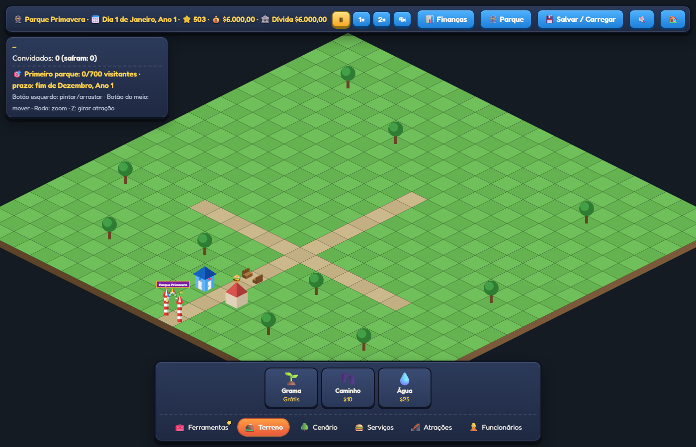
Terreno 24×24 vazio com uma cruz de caminhos, um banco, uma barraca de comida e um banheiro perto do portão. Caixa e dívida de $6.000. Liberados: árvore, banco, lixeira, as três barracas, banheiro, carrossel, roda-gigante, navio pirata e montanha-russa.
Visitante = quem passou pelo portão. No ritmo normal (avaliação 500) chegam cerca de 650 por ano: você precisa de uma avaliação acima de 500 durante o ano e de ninguém desistindo no portão.
Uma lagoa enorme ocupa o terreno, contornada por caminhos. Caixa e dívida de $12.000. Já existem um banco e uma sorveteria. Liberados: árvore, banco, lixeira, as três barracas, banheiro, carrossel, roda-gigante e passeio de barco.
A nota é conferida no fechamento de cada mês; um mês abaixo de 550 zera a sequência.
Você herdou um parque com carrossel, roda-gigante, montanha-russa, navio pirata e uma barraca de comida, mas também a dívida máxima: $20.000 a 5% ao mês, com só $1.500 no caixa. Faltam bebidas, banheiro e bancos. Tudo está liberado.
As contas fixas começam altas: $1.000 de juros mais cerca de $616 de manutenção por mês.
Aqui os brinquedos não cobram nada (o preço fica travado em $0): o dinheiro vem da entrada e das barracas. Caixa e dívida de $8.000; já existem carrossel, roda-gigante, barraca de comida, banheiro e banco, num anel de caminhos em volta de um lago.
Patrimônio = caixa − dívida + metade do que os objetos custaram. Por isso construir algo de $800 “custa” $400 de patrimônio na hora (o valor de demolição fica contando).
| Erro | Solução |
|---|---|
| Atração sem caminho encostado: ninguém usa | Ligue qualquer lado da pegada a um caminho. |
| Esquecer o banheiro | Comer e beber enchem a bexiga; queixas 🚻 derrubam a nota. |
| Entrada cara demais | Desistências no portão custam visitantes e até 100 pontos. |
| Preços altos nos brinquedos | O convidado prefere outro ou não vai a nenhum. Mais visitantes rende mais. |
| Lixeiras sem faxineiro | Elas enchem e transbordam: contrate pelo menos um. |
| Nenhum mecânico | Brinquedo quebrado fica parado para sempre; contrate um na primeira quebra. |
| Corredor único de 1 tile | Alargue perto do portão e das filas; crie anéis. |
| Dívida esquecida | Juros todo mês: pague parcelas quando sobrar caixa. |
| Construir tudo de uma vez | Manutenção acumulada; cresça conforme a receita. |
| Canal do barco bloqueado | A fileira da frente e a de trás precisam ser água livre. |
| Atração | Pegada | Custo | Manut. | Preço | Intens. | Lugares | Duração | Felic. | Náusea | Público | Máx./mês* |
|---|---|---|---|---|---|---|---|---|---|---|---|
| 🎡 Roda-gigante | 3×2 | $700 | $100 | $6 | 2 | 8 | 20 s | +30 | +5 | 30% | 120 |
| 🚣 Passeio de barco | 3×2 (água) | $750 | $90 | $4 | 3 | 8 | 16 s | +28 | +8 | 50% | 150 |
| 🚂 Trem | 4×3 | $950 | $70 | $4 | 3 | 12 | 30 s | +30 | +4 | 50% | 120 |
| 👻 Casa mal-assombrada | 2×2 | $1.000 | $110 | $6 | 4 | 8 | 15 s | +34 | +3 | 69% | 160 |
| 🎠 Carrossel | 2×2 | $800 | $100 | $5 | 5 | 6 | 8 s | +35 | +25 | 79% | 225 |
| 🛝 Tobogã | 3×2 | $600 | $60 | $3 | 5 | 6 | 14 s | +32 | +10 | 79% | 128 |
| 🛶 Corredeira | 3×3 (água) | $1.100 | $130 | $7 | 6 | 6 | 20 s | +38 | +16 | 79% | 90 |
| 🏴☠️ Navio pirata | 3×2 | $900 | $120 | $7 | 7 | 10 | 18 s | +40 | +20 | 69% | 166 |
| 🎢 Montanha-russa | 4×3 | $1.200 | $200 | $8 | 8 | 12 | 25 s | +45 | +30 | 50% | 144 |
* Passageiros por mês com a fila sempre cheia (máximo teórico: 300 s ÷ duração × lugares). “Público” = fatia aproximada dos convidados cuja tolerância aceita o brinquedo normalmente. Todas as atrações quebram do mesmo jeito: 0,3% por viagem quando novas, +0,15% por ponto de desgaste, até 6%.
| Objeto | Custo | Manut. | Preço | Efeito |
|---|---|---|---|---|
| 🍔 Barraca de comida | $350 | $80 | $4 | fome −60, banheiro +12 (papel) |
| 🥤 Barraca de bebidas | $350 | $40 | $3 | sede −80, banheiro +10, náusea −10 (copo) |
| 🍦 Sorveteria | $400 | $60 | $3 | fome −30, sede −25, felicidade +8, banheiro +6 (palito) |
| 🚻 Banheiro | $350 | $50 | $0 | banheiro −100 |
| 🪑 Banco | $60 | $5 | $0 | energia +40, náusea −35 |
| 🗑️ Lixeira | $50 | $3 | — | guarda 30 itens |
| 🌳 Árvore | $30 | $2 | — | decoração |
| 🧹 Faxineiro | $500 | $150 | — | limpa vômito, lixeiras e lixo (salário) |
| 🔧 Mecânico | $600 | $200 | — | conserta brinquedos quebrados (salário) |
| Tecla / mouse | Ação | Tecla / mouse | Ação |
|---|---|---|---|
| Botão esquerdo | usar a ferramenta (arraste para pintar) | Espaço | pausa / continua |
| Botão do meio | arrastar o mapa | 1 2 3 | velocidade 1×, 2×, 4× |
| Roda | zoom | Z | girar a atração |
| 🏠 | tela inicial (pausa) | Esc | fechar janela ou painel |